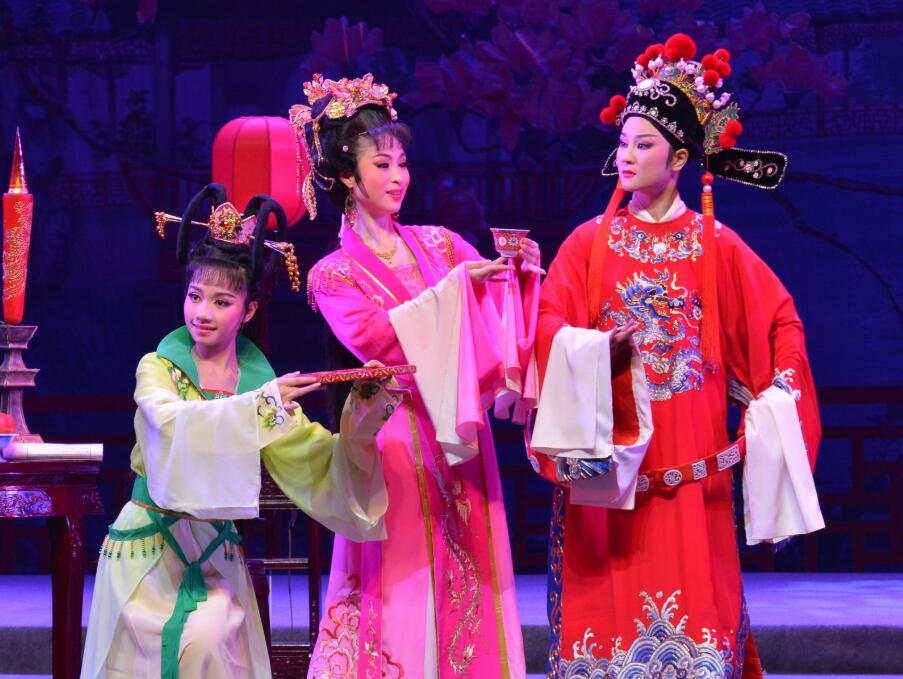

黄梅戏

黄梅戏，原名黄梅调、采茶戏等，起源于湖北黄梅，发展壮大于安徽安庆。
黄梅戏与京剧、越剧、评剧 、豫剧并称“中国五大戏曲剧种”，也是安徽省的主要地方戏曲剧种，湖北、江西、福建、浙江、江苏、香港、台湾等地亦有黄梅戏的专业或业余的演出团体，受到广泛的欢迎。
黄梅戏是由山歌、秧歌、茶歌、采茶灯、花鼓调，先于农村，后入城市，逐步形成发展起来的一个剧种。它吸收了汉剧、楚剧、高腔、采茶戏、京剧等众多剧种的因素，逐渐形成了自己的艺术特点。黄梅戏唱腔淳朴流畅，以明快抒情见长，具有丰富的表现力；表演质朴细致，以真实活泼著称。一曲《天仙配》让黄梅戏流行于大江南北，在海外亦有较高的声誉。
2006年5月20日，黄梅戏经国务院批准列入第一批国家级非物质文化遗产名录。